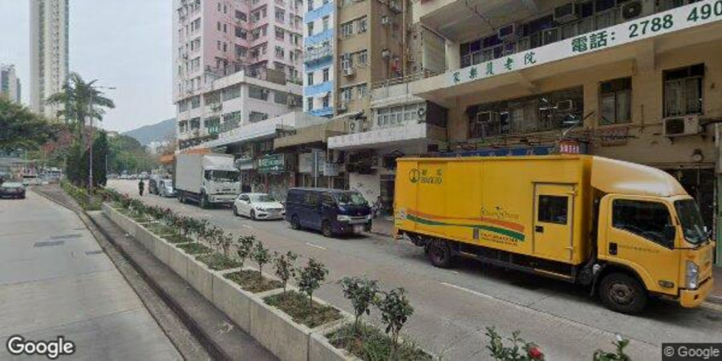
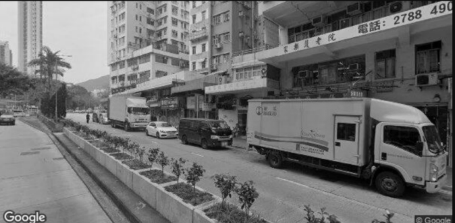
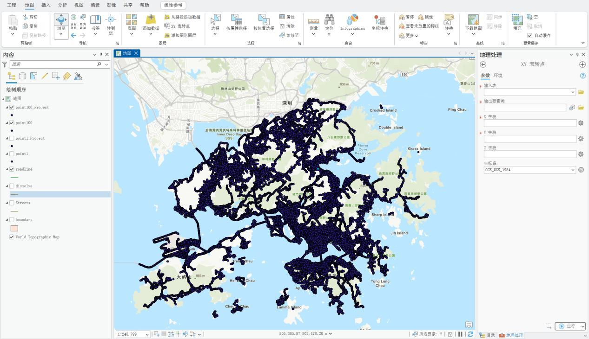
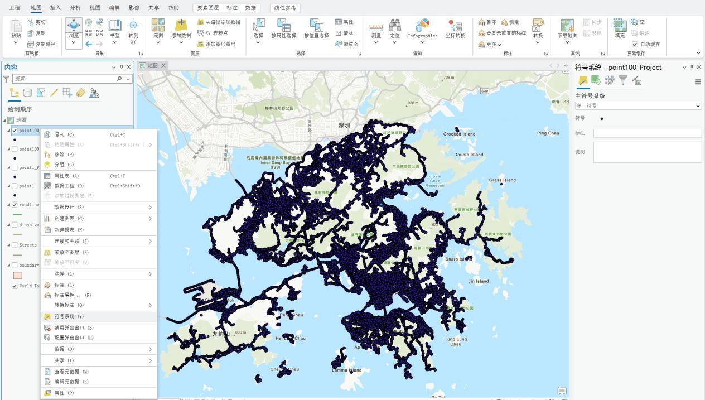
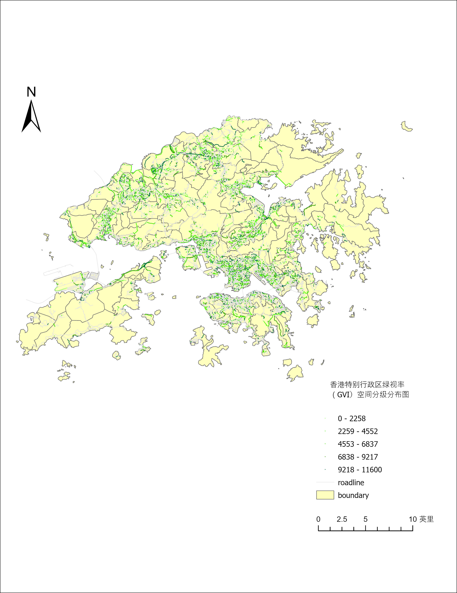

研究图层说明
以街景采样点的 GVI_Score 为核心属性，量化行人平视视角中的绿植暴露。网页交互地图读取 Longitude、Latitude 与 GVI_Score 字段；本页补充 ArcGIS Pro 的数据还原、分级与最终制图成果。
覆盖 31,514 个街景采样点，其中 18,147 个点的绿视率低于 5%。
以街景采样点的 GVI_Score 为核心属性，量化行人平视视角中的绿植暴露。网页交互地图读取 Longitude、Latitude 与 GVI_Score 字段；本页补充 ArcGIS Pro 的数据还原、分级与最终制图成果。
原始街景与对应灰度图用于展示图像输入和预处理。灰度化仅转换图像色彩，不代表已完成绿植识别；绿植掩膜或分割叠加图仍待补充。


将包含经纬度和绿视率字段的点表导入 ArcGIS Pro，通过 XY Table To Point 还原为采样点；坐标系设为 GCS_WGS_1984（EPSG:4326），以确保后续网页地图能正确定位。

在符号系统中以绿视率字段作为分级依据，选择分级色彩并调整点符号大小与视觉层级，使道路空间中的差异清晰可读。


GVI = 绿植像素数 / 图像总像素数 × 100%